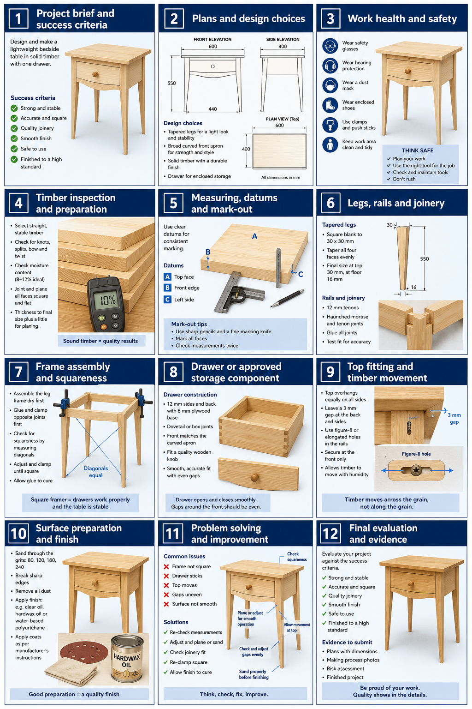

Safe to handle and use
No rocking, loose component, proud fixing, sharp edge or unsafe movement.
Industrial Technology – Timber
Weeks 17–18: Quality checks, evidence, problem solving and evaluation

Your work
Your entries save automatically in this browser. Use Print / Save PDF before leaving the page.
Two-week roadmap
Use measurements, photographs and honest judgement to show what the finished bedside table proves. Apply the procedures and checks to the actual bedside-table project before irreversible work continues.
Theory 1

A final quality check should compare the completed bedside table with the approved drawing and success criteria, using clear evidence rather than general impressions. Place the table on a flat surface and check that it stands firmly without rocking. Confirm that the frame is square, joints are fully fitted and joint lines are neat, with no visible gaps or movement.
Compare the tapered legs from several angles to check that their shape and orientation are consistent. Inspect the thick top for correct alignment, even overhangs where shown on the drawing and secure fitting. Check that the curved front apron follows the approved shape smoothly and is free from uneven transitions.
Test storage components or hardware only where they are included in the approved design, confirming safe and reliable operation. Examine the finish under good light for runs, missed areas, scratches or uneven surfaces. All edges must be safe to handle.
Record any remaining issues honestly, including their location, likely cause and effect on the final result.
No rocking, loose component, proud fixing, sharp edge or unsafe movement.
The top is secure and any approved storage component operates reliably.
Tapers, joints, apron, overhangs, gaps and alignment are deliberate.
Surfaces are smooth, clean and free from runs, misses and obvious preparation faults.
Photographs and measurements show what was tested and the result.
Remaining limitations are identified without hiding or exaggerating them.
Theory 2
Strong problem solving explains more than the visible fault. It identifies evidence, proposes a likely cause, selects the least invasive approved correction and checks whether the result improved.
Describe the symptom precisely. “The drawer sticks” or “the top is crooked” is a starting point. Add where, when and how much the issue appears. Note the reference used to confirm the problem.
Test one likely cause at a time. Binding may come from a high edge, racked opening, hardware alignment or finish build. Rocking may come from leg length, twist, debris or an uneven floor. Random sanding or tightening can create a second fault while leaving the cause untouched.
Record the outcome honestly. State what changed after correction and whether a limitation remains. A useful improvement is specific enough to repeat on a future project.
State the observable fault and evidence.
Explain the likely cause and controlled correction.
Retest against the criterion and record the outcome.
Theory 3

Evidence for the completed bedside table should be clear, purposeful and directly linked to the approved success criteria. Take well-framed photographs that show the overall table and important construction details, including the tapered legs, thick top, curved front apron, joint fit and finish quality. Include any approved storage feature only when it is part of the completed design.
Each image should have a brief caption explaining what it proves, such as consistent leg tapers, correct top alignment, smooth apron shaping or neat joint lines. Record relevant measurements and checks where they provide useful evidence of accuracy, squareness, stability or alignment. Photograph the table in a safe, tidy area with tools, leads and waste removed from the background.
Use good lighting and angles that reveal workmanship honestly rather than hiding defects. Select the strongest evidence for each success criterion and avoid decorative, repetitive or nearly identical photographs. A smaller set of useful images is more valuable than many photos that provide no new information.
Drawing, sketch, cutting list, timber placement or risk-control evidence.
Mark-out, joinery, dry fit, clamp set-up, fit check or surface inspection.
Finished table, functional tests, close details and evidence-based judgement.
Theory 4
A caption makes a photograph interpretable. It identifies the stage, process or decision, the evidence visible and the outcome or significance.
Name the feature and stage. “Photo of table” is too vague. Identify the dry-fitted frame, matched tapered legs, top alignment, drawer clearance, raking-light inspection or finished apron.
Point to visible evidence. Mention equal diagonals, closed shoulders, an even reveal, a marked datum, a corrected high spot or a consistent finish. Do not claim something the photograph cannot show.
Explain why it matters. Link the evidence to stability, accuracy, safe manufacture, function, appearance or the approved success criteria. Where a correction occurred, include the before-and-after result.
Stage + action + evidence + result.
Example: “During the frame dry fit, the diagonal measurements differed, showing the frame was racked. Clamp pressure was adjusted until the diagonals matched and all four shoulders remained closed.”
Theory 5

An evaluation is an honest judgement of how successfully the completed bedside table meets the design brief and approved success criteria. Use evidence from photographs, measurements, quality checks and workshop observations rather than vague statements such as “it looks good”. Compare the final table with the approved drawing, considering the consistency of the tapered legs, alignment of the thick top, shape of the curved front apron, joint fit and finish quality.
Discuss any approved storage feature only if it is part of the design. Identify clear strengths and explain why they were successful. Also record limitations honestly, including where the result differs from the plan or could be improved.
Explain the likely cause of each issue, such as inaccurate marking, uneven sanding, poor clamping or rushed finishing. Finish by proposing one specific and realistic improvement that could be made if the project were completed again. A strong evaluation is balanced, evidence-based and focused on improving future workmanship.
State the specific requirement being judged.
Use a test, measurement, photograph or observed result.
Explain how successfully the criterion was met.
Identify a realistic change linked to the cause of a limitation.
Theory 6
The project folio should form an evidence chain from the brief to the finished table. It does not need every photograph, draft or repeated check.
Select for purpose. Include evidence that shows understanding, decisions, safe manufacture, quality control, problem solving and final evaluation. Choose the clearest version when several images prove the same point.
Keep evidence authentic. Photographs, measurements and explanations must match the table actually built. A polished generic explanation is weaker than a precise account of the student’s own decision and result.
Back up as you work. The bedside-table folio saves in the current browser. Download a ZIP backup containing answers and photos before changing devices or clearing browser data.
Guided practice
Each incorrect option explains the misunderstanding. Use the hint, return to the theory and keep trying until the question is mastered.
Apply your learning
Write a genuine first attempt, check the live guidance, compare with the model and improve your explanation before self-assessing.
Finish the two-week block
Your answers save in this browser as you work, but browser storage is not the official submission. Save the completed page as a PDF before closing it.
No marks, answers or personal information are sent from this webpage.